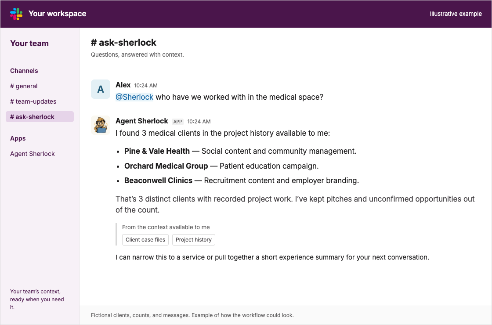

Social intelligence for your team
Meet your new AI detective.
Sherlock investigates competitors’ social activity, researches leads and accounts, keeps CRM and case files current, and remembers the facts your other agents need.
Public edition in development. Explore what we’re building.
Built to work with your agents.
Your tools. Sherlock’s skills and context. The goal is to make useful research and memory portable across the agents you already use.
 Claude Code
Claude Code- ChatGPT
 Hermes Agent
Hermes Agent OpenClaw
OpenClaw- And more.
Planned compatibility. Public setup and supported features are still being validated for each tool. Compatibility details
A few things Sherlock can do.
Built around social research, with useful context for sales, strategy, and the rest of your agents. These are the planned capabilities of the public edition.
-
Investigate competitors
Explore social content, audience conversations, and visible paid creative. Turn the evidence into a focused competitor brief.
Social research -
Keep your CRM current
Research leads and accounts, read existing records, and add relevant facts with the sources behind them.
Account intelligence -
Build living case files
Keep company context, social signals, evidence, and account history together as an investigation develops.
Connected evidence -
Remember for the team
Give your sales, strategy, and content agents relevant facts from earlier work, with sources they can revisit.
Shared context
Sherlock in Slack
Your team’s experience,
a Slack message away.
Medical, finance, automotive, and beyond. Ask Sherlock who you’ve worked with, how many clients fit an industry, or what your team did for them. He draws on the history and context available to him, right in Slack.

Read the conversation
Alex: @Sherlock who have we worked with in the medical space?
Agent Sherlock: I found 3 medical clients in the project history available to me: Pine & Vale Health, Orchard Medical Group, and Beaconwell Clinics.
This is a fictional demonstration of recalling past client work.
{kind=link}
Build Sherlock into your Slack workflow. Ask who you’ve worked with, how many clients fit an industry, and what the team did for them.
Built around the context he has. The answer reflects the records Sherlock can access, so the source history and any gaps matter.
Based on the team’s existing Slack workflow. Setup for the public edition is in development. How Sherlock fits into Slack
Example workflow
From a clue to shared context.
A question for Sherlock
What changed in our competitor’s social strategy?
Follow a new content pattern from the public posts that reveal it to the account context your team can use.
Fictional example of the planned workflow.
-
Find a social signal
A competitor starts a recurring customer-story series. Gather the posts and note what changed.
-
Connect it to the account
Add the evidence to its case file and prepare a sourced CRM note for review.
-
Give other agents the context
A content agent plans a test. A sales agent brings the same finding to the next account conversation.
Your detective. Your repo to explore.
The plan: free, open-source software you can use, inspect, and extend for your own team of agents.
The GitHub repository and software license are being prepared.
Sherlock is free. Model providers and connected services may charge separately.